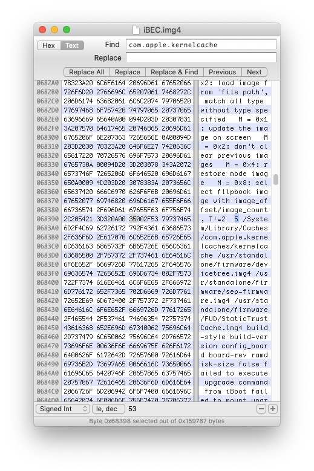

iOS 13
With the introduction of iOS 13 Apple moved fstab from filesystem to DeviceTree. Partitions are now recognized with roles:
- s for System partition
- d for Data partition
- x for xART partition
- a for Baseband Data partition
- p for Update partition
Free roles are l, r and 0.
We can't write more volumes with same roles and fstab from filesystem will be ignored. The best way for getting our kernel to boot with second data is patching devicetree to use role 0 on Data partition and create system with one of the two free roles.
Partitoning
newfs_apfs -o role=r -A -v SystemB /dev/disk0s1
newfs_apfs -o role=0 -A -v DataB /dev/disk0s1
Patching DeviceTree
You can patch using dtree_patcher.
Unpack the devicetree:
img4 -i DeviceTree* -o dtree.raw
And patch it:
dtree_patcher dtree.raw dtree.patched -d (-n)
Pack patched devicetree into img4:
img4 -i dtree.patched -o devicetree.img4 -A -M IM4M -T rdtr
First Boot
Boot process is different, we have to send more bootchain.
Change iBoot boot-partition to 5:

Search for "com.apple.kernelcache" and change the 0 behind it to 5 (or your System partition-1, disk0s1s1=0, disk0s1s2=1).
Pack aopfw, ISP (adc-nike), AudioCodecFirmware (CallanFirmware), Multitouch and Trustcache into img4:
img4 -i image.im4p -o image.img4 -M IM4M
Send iBSS, iBEC, applelogo, devicetree and all signed images. Then load them using firmware command:
irecovery -f image.img4
irecovery -c firmware
Send kernelcache and bootx:
irecovery -f kernelcache.img4
irecovery -c bootx
Dual Booting 64 Bit